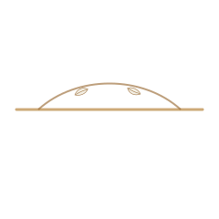

Evaluation
- Advanced aesthetic biomedicine
- Professional evaluation
- Personalised care

Concept 11 · Bloom · Care
The care page organises consultation, suitability, planning and responsible follow-up.


institutional credential atlas
Logo, FS monogram, portrait treatment, botanical detail and custom icons are built as a local Sofiati asset pack for this page.
Care architecture
A compact view of the shared service language used across every concept.
Results may vary according to individual characteristics, professional evaluation, treatment indication, protocol, number of sessions and aftercare. Information on this website is educational and does not replace an individual professional evaluation.
institutional authority landing
A compact map of evaluation, planning, treatment and aftercare.
Care protects expression and avoids pressure-led aesthetic decisions.
Aftercare helps protect comfort, consistency and responsible expectations.
stat count revealNo patient images, quotes or private details are used without approval.
WhatsApp, email and Instagram are the public contact routes.
Consultation
A short consultation route keeps decisions calm, private and evaluation-led.
CRBM 6277 · Londrina, PR